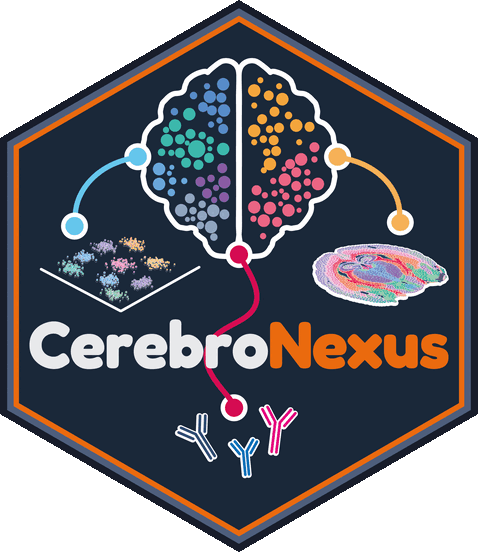

Share data sets as a Shiny app
26 November, 2026
Source:vignettes/articles/create_a_self_contained_shiny_app.Rmd
create_a_self_contained_shiny_app.RmdOverview
There are two ways to let other people browse your .crb
files:
| Route | Use it when |
|---|---|
launchCerebro(mode = "closed") |
You start the app yourself, on your computer or on a server with CerebroNexus installed, and want to show fixed data sets without uploads. |
createShinyApp() |
You want a directory that runs on its own: hand it to a colleague, or deploy it to Shiny Server, Posit Connect or shinyapps.io. |
Both can show several data sets with a switcher and your own welcome
message; createShinyApp() can also set the page the App
opens on.
Launch with pre-loaded data sets
Provide the data path and closed mode to
launchCerebro(). In closed mode, users cannot upload their
own data sets, which is useful when you share data on a web server, for
example alongside a publication.
launchCerebro(
crb_file_to_load = "~/Cerebro/data_sets/pbmc_v3.crb",
mode = "closed"
)To offer several data sets in one launch, give every file a unique,
non-empty name. The name is the data set identity used in links
(?dataset=sampleA) and saved state;
launchCerebro() stops with an error when more than one
unnamed file is given.
launchCerebro(
crb_file_to_load = c(sampleA = "~/Cerebro/a.crb", sampleB = "~/Cerebro/b.crb"),
mode = "closed"
)To change the message on the Data info page, for example to link to a
publication or introduce the data set, use welcome_message.
For launchCerebro() it can contain HTML:
custom_welcome_message <- '<h3 style="text-align: center; margin-top: 0px"><strong>This is a custom welcome message to Cerebro</strong></h3>
<p style="margin-left: 10px;">This data set belongs to publication XY by Max Mustermann <em>et al.</em>.<br>
It contains the transcriptomic profiles of PBMC samples taken from mice undergoing treatment F.<br>
Please contact us at ... if you have any questions.</p>'
launchCerebro(
crb_file_to_load = "~/Cerebro/data_sets/pbmc_v3.crb",
mode = "closed",
welcome_message = custom_welcome_message
)Build a self-contained app
createShinyApp() bundles a CerebroNexus Shiny app into a
single output directory. It copies the Shiny sources shipped under
inst/viewer/, the requested .crb (or
.rds) data file(s), and the inst/extdata/
reference files, and writes an app.R that wires everything
together with a pre-built Cerebro.options list. The result
is a directory you can serve directly with shiny-server,
drop behind rsconnect/Posit Connect, or launch locally with
shiny::runApp() — no further calls into
CerebroNexus are required at runtime.
The workflow is self-contained: the sibling H5 matrix and the immune
repertoire sidecar, if the .crb has them, are copied next
to the .crb. The generated app needs no path outside its
own directory.
Self-contained refers to the application code and data, not an
embedded R installation. The destination still needs R and the Viewer
packages from the exporting version’s DESCRIPTION Imports,
plus backend/content dependencies used by the selected datasets
(BPCells, rhdf5/HDF5Array, or
shinymanager >= 1.1.0 for login). Installing the
matching CerebroNexus version with the needed optional packages is a
convenient way to provision that runtime, although the exported App does
not call back into the package.
This is the recommended path when you want to hand a colleague a
runnable copy of Cerebro pre-loaded with a specific data set without
making them install the package themselves, pin the Shiny sources at a
known revision alongside the data, or deploy to a host that doesn’t run
R interactively (Shiny Server or shinyapps.io, for
example).
Setup
The package ships an example .crb in
inst/extdata/examples/, which we use throughout this
vignette.
library(CerebroNexus)
crb <- system.file("extdata/examples/example.crb", package = "CerebroNexus")
file.exists(crb)
#> [1] TRUEQuick start
cerebro_data must be a named character
vector (or list). Names must be non-missing and unique because they are
the data set identities used in links; unless you set
dataset_labels, they are also the names shown in the
Dataset dropdown. The values are paths to
.crb (or .rds) files.
out_dir <- file.path(tempdir(), "cerebro_app")
createShinyApp(
cerebro_data = c("PBMC example" = crb),
result_dir = out_dir,
launch_browser = FALSE
)After this call, out_dir contains the generated
app.R, a copy of the Shiny sources under
viewer/, the reference files under extdata/,
the data file(s) under private-data/, and a
cerebro_config.rds holding the serialized
Cerebro.options. The private-data/ directory
is private to the R process: the generated app does not register it as
an HTTP resource.
Launch it locally:
shiny::runApp(out_dir)On Linux, bash viewer/start-linux.sh from
out_dir prepares authentication-file permissions and starts
the App. For Shiny Server/systemd, initialize with
sudo bash viewer/start-linux.sh --prepare-only --user shiny
using the real service account, then start the service normally. See
viewer/AUTHENTICATION-DEPLOYMENT.md in the exported
directory.
Common parameters
| argument | purpose |
|---|---|
cerebro_data |
named vector/list of .crb (or .rds) paths;
labels and resolved source files must both be unique |
result_dir |
output directory (required; portable basename outside the reserved lock namespace) |
overwrite |
replace result_dir after a complete staged build; with
FALSE, the destination must be absent or empty |
max_request_size |
finite positive numeric request cap in MB; defaults to
8000; closed Viewers use at most 6 MiB |
port, host
|
whole-number port 1-65535 and a non-empty
host string; defaults to 8080 / 127.0.0.1
|
launch_browser, quiet,
display_mode
|
non-missing logical flags and exactly auto,
normal, or showcase for
shiny::runApp()
|
welcome_message |
text shown on the Data info page |
colors |
optional
dataset -> variable -> named level colours list |
cerebro_options |
extra entries merged into Cerebro.options
|
crb_pick_smallest_file |
forwarded into Cerebro.options
|
initial_dataset |
name of the data set loaded first; see Default file selection |
show_upload_ui |
allow dataset and session-only HLA typing uploads; defaults to
FALSE for generated apps |
initial_page |
stable Viewer page ID used once when the first dataset loads; Data info by default |
point_size, point_opacity,
percentage_cells_to_show
|
scalar or named per-dataset scatter defaults |
variable_to_compare |
forwarded into Cerebro.options
|
extra_tables, extra_tables_sheets
|
external delimited files or Excel workbooks, plus optional displayed sheet names |
When show_upload_ui = FALSE, the generated Viewer limits
the effective request size to the smaller of
max_request_size and 6 MiB. This keeps a closed deployment
from accepting large request bodies even though no upload control is
displayed. Open Viewers use the supplied max_request_size.
Closed mode also rejects HLA typing uploads server-side and hides the
HLA override controls. Stored HLA typing, its analyses and downloads,
and view-configuration JSON imports remain available.
Several data sets
CerebroNexus can load multiple .crb
files in a single app. When more than one file is supplied to
createShinyApp(), a Dataset dropdown
appears in the sidebar so users can move between data sets without
restarting the app. Each data set keeps its own expression data,
metadata, and module-specific slots — including the immune repertoire —
so conditional tabs (such as Immune Repertoire) appear or
disappear as you switch.
Pass a named vector of .crb paths. The
demo data sets shipped with the package are genuinely different samples
— a PBMC set (TCR + BCR + a monocle2 trajectory) and four real
spatial-transcriptomics sections spanning distinct platforms — so the
UMAP, the cell-type mix, and the conditional tabs all change as you
switch:
createShinyApp(
result_dir = file.path(tempdir(), "cerebro_app_multi"),
cerebro_data = c(
"PBMC - Full (T+B)" = system.file("extdata/examples/demo_full_tcr_bcr.crb", package = "CerebroNexus"),
"Mouse brain (Visium)" = system.file("extdata/examples/demo_spatial_visium.crb", package = "CerebroNexus"),
"Mouse hippocampus (Slide-seq v2)" = system.file("extdata/examples/demo_spatial_slideseq.crb", package = "CerebroNexus"),
"Mouse ileum (MERFISH)" = system.file("extdata/examples/demo_spatial_merfish.crb", package = "CerebroNexus"),
"Mouse brain (Xenium)" = system.file("extdata/examples/demo_spatial_xenium.crb", package = "CerebroNexus")
)
)| Data set | Type | Conditional tab |
|---|---|---|
| PBMC - Full (T+B) | scRNA-seq + TCR/BCR + trajectory | Immune Repertoire, Trajectory |
| Mouse brain (Visium) | spatial (spots, external H&E) | Spatial |
| Mouse hippocampus (Slide-seq v2) | spatial (beads, no image) | Spatial |
| Mouse ileum (MERFISH) | spatial (imaging, embedded DAPI) | Spatial |
| Mouse brain (Xenium) | spatial (imaging, external DAPI variants) | Spatial |
External images are separate files, not part of the
.crb, so this call shows the Visium and Xenium sections
without a tissue background. To add them, pass the image files through
spatial_images; see Placing
histological images.
When the app starts, the sidebar shows a dropdown with these samples. Switching changes the whole data set — the UMAP, the cell-type composition, and the conditional tabs (Immune Repertoire / Trajectory / Spatial), which appear only for the data sets that carry that content.
The PBMC demo is derived from the public 10x Genomics
vdj_v1_hs_pbmc3 dataset and the spatial demos from public
reference sections; see data-raw/README.md in the package
source for the full, reproducible builds.
Colours and scatter defaults per data set
The names of cerebro_data are what the user picks from
inside Cerebro. You can also supply matching colors so each
dataset gets a deterministic palette.
crb_pbmc <- system.file("extdata/examples/example.crb", package = "CerebroNexus")
# crb_other <- "/path/to/another_dataset.crb"
createShinyApp(
cerebro_data = c(
"PBMC example" = crb_pbmc
# , "My dataset" = crb_other
),
result_dir = file.path(tempdir(), "cerebro_app_colors"),
colors = list(
"PBMC example" = list(sample = c(pbmc_1 = "#1f77b4"))
),
point_size = c("PBMC example" = 4),
point_opacity = c("PBMC example" = 0.8),
percentage_cells_to_show = c("PBMC example" = 75),
welcome_message = "Welcome to my Cerebro deployment.",
launch_browser = FALSE
)Each colors dataset entry maps metadata variables to
named level colours. The three scatter options may be one value shared
by all datasets or a named numeric vector/list whose names exactly match
cerebro_data.
Default file selection
By default the smallest .crb file (by
size on disk) is loaded first. Set
crb_pick_smallest_file = FALSE to load the first file in
the vector instead:
createShinyApp(
result_dir = file.path(tempdir(), "cerebro_app_order"),
cerebro_data = c(
a = "file_a.crb",
b = "file_b.crb"
),
crb_pick_smallest_file = FALSE # loads file_a.crb
)To open a particular data set whatever its size or position, name it
with initial_dataset, for example
initial_dataset = "b" to load file_b.crb. A
link that names a data set (see below) takes precedence over both
settings. Once a file is chosen from the dropdown, that selection
persists until the user switches again.
Linking to a specific data set
When the app is deployed, a data set can be selected directly from the URL, so you can share a link that opens straight into one sample. Both a query string and a path segment are supported:
https://your-host/app/?dataset=TCR
https://your-host/app/TCRThe token is the last path segment (so it works even
when the app is mounted under a sub-path such as /app/), or
the value of the dataset query parameter. It is matched
against the names you gave in
cerebro_data; file names are not links. A
?dataset= value that matches no name opens the default data
set (see Default file selection)
with a warning; a path that matches no name is not served (HTTP 404).
The path form also works when you start the App yourself with
launchCerebro() or shiny::runApp(); write it
without a trailing slash (/TCR, not /TCR/).
When both forms are present, the query parameter wins.
The address bar follows the data set you are reading: when you pick
another one from the dropdown, ?dataset= changes to its
name, so the copied URL reopens the same data set. The path is never
rewritten, because under Shiny Server it is the App’s mount point.
Linking to a specific page
Add page= with a stable page ID to open the App on that
page, with or without dataset=:
https://your-host/app/?dataset=TCR&page=immune_repertoireThe IDs are those of initial_page in
createShinyApp(): data_info,
projection, linked_views, groups,
marker_genes, most_expressed_genes,
enriched_pathways, extra_material,
immune_repertoire, trajectory,
spatial, trekker, hla_tcr_motifs,
gene_expression, gene_id_conversion,
color_management and about. A link overrides
the author’s initial_page for that visit. An unknown ID is
ignored, and a page the data set does not have opens Data info. While
you read, the address bar follows the page you are on, so the copied URL
reopens it.
Start page and welcome message
Without initial_page, the App opens on Data info, and
prepares the Projection while it is read: a click on Projection then
shows the plot at once. Use initial_page with a stable page
ID such as "linked_views", "extra_material",
or "spatial":
createShinyApp(
cerebro_data = c("PBMC example" = crb),
result_dir = file.path(tempdir(), "cerebro_app_spatial"),
initial_page = "spatial",
launch_browser = FALSE
)Initial routing is a one-time decision for the first loaded dataset. If that dataset does not support a conditional page, the Viewer stays on its normal page; switching later to a compatible dataset does not redirect the user after manual navigation. Restored shared links take precedence over this default.
createShinyApp() has the same
welcome_message argument as launchCerebro()
(see Launch with pre-loaded
data sets); it sets the text on the Data info page of the generated
app.
External Extra material tables
extra_tables accepts a named collection of CSV, TSV,
TXT, XLS, XLSX, or XLSM files. Excel workbooks expose each non-empty
sheet separately. Use extra_tables_sheets to rename
selected sheets while retaining unmapped sheet names:
createShinyApp(
cerebro_data = c("PBMC example" = crb),
result_dir = file.path(tempdir(), "cerebro_app_tables"),
extra_tables = list(
"QC summary" = "results/qc.csv",
"Annotations" = "results/annotations.xlsx"
),
extra_tables_sheets = list(
"Annotations" = list("Cell labels" = "Sheet1")
),
launch_browser = FALSE
)The build converts non-empty tables to private RDS assets without recording their source paths. The Viewer first presents the file and sheet choices, then loads only the selected sheet. Formula-like text is neutralized and external table cells are HTML-escaped in the Viewer; downloads use the same neutralized data.
Forwarding extra Cerebro options
Anything you want to surface in Cerebro.options that
isn’t already a top-level argument can go through
cerebro_options.
createShinyApp(
cerebro_data = c("PBMC example" = crb),
result_dir = file.path(tempdir(), "cerebro_app_opts"),
cerebro_options = list(
exclude_trivial_metadata = TRUE
),
launch_browser = FALSE
)mode, cerebro_version,
crb_file_to_load, cerebro_root, and the
internal .bundle_backend_plan and
.bundle_run_options are filled in by the function itself.
Duplicate entries for either internal key are removed, and anything you
supply for those keys is overwritten.
Deploying the bundle
The output directory is self-contained: shipping the folder is all that is required. Three common targets:
# 1. Local
shiny::runApp(out_dir)
# 2. shiny-server / Posit Connect
# Drop the directory under the server's app root (e.g. /srv/shiny-server/),
# or use the Posit Connect publishing UI pointing at `app.R`.
# 3. shinyapps.io
rsconnect::deployApp(appDir = out_dir)shinyapps.io
shinyapps.io is moving to Posit Connect Cloud. Accounts that have not moved themselves are migrated automatically in waves starting on January 28, 2027; see the shinyapps.io migration guide.
To deploy to shinyapps.io, you need an account there and the
rsconnect package:
install.packages("rsconnect")Then, you need to provide rsconnect with your
shinyapps.io account info. On the shinyapps.io website, in the left
navigation bar, go to “Account” and then “Tokens”. A token should have
already been generated for you. Take the token and secret, your account
name, and run the command below.
rsconnect::setAccountInfo(name="<ACCOUNT>", token="<TOKEN>", secret="<SECRET>")Build the app with createShinyApp() as above, then
upload the generated directory:
rsconnect::deployApp(out_dir, appName = "Cerebro")Uploading and preparing the app might take a few minutes. In the shinyapps.io dashboard you can manage the app and check usage metrics and logs. The “Instance size” in the “Settings” tab controls the available memory: the larger the data set, the more memory the app needs.
Login page
To restrict access, see Control access to CerebroNexus with a login page.
Technical details
Sibling files: .h5 and .immune.qs2
If your .crb was exported with
expression_matrix_mode = "h5" in
exportFromSeurat(), its descriptor records the H5 file
relative to the .crb. Fresh exports use
<stem>.h5, but the descriptor remains authoritative
if the .crb is renamed. A large immune repertoire can sit
in a second sibling, <stem>.immune.qs2, which the
.crb also records by relative name (see
immune_sidecar in ?saveCerebro).
createShinyApp() copies each recorded file to the same
relative location under result_dir/private-data/, next to
the copy of the .crb. The location must be a portable
relative path; missing sidecars and conflicting bundle targets are
errors rather than silent overwrites. Before copying, the function
resolves every descriptor and sidecar and plans all data and
spatial-image targets together. Exact, parent/child, case-folded and
symbolic-link collisions fail during preflight.
Preflight reads the ordinary expression_backend field
without invoking its serialized getter and writes a versioned, per-CRB
attachment plan into cerebro_config.rds. Configured CRBs
consume that exact plan at runtime instead of interpreting the
serialized object a second time. Direct launches and uploads also avoid
the getter: they validate the ordinary field at load time.
A .crb in a retired format is rejected during preflight,
before anything is written, with
uses a retired format ... Convert it once with CerebroNexus::convertCerebro().
See Data integrity contracts
for what counts as retired.
Private data and spatial assets
Files explicitly passed through spatial_images are
copied under spatial-assets/. The server exposes each
selected image through a private, session-scoped URL; the image bytes
are not Base64-encoded, and the directory is not registered as a public
HTTP resource. Raw .crb, H5 and immune repertoire sidecar
files stay under private-data/, which is likewise never
registered with addResourcePath(). The historical
data/ directory name is deliberately not reused: a
still-running older generated app can retain its former
/data resource mapping while the bundle directory is
replaced.
This boundary prevents ordinary HTTP download through the generated
Shiny app; it is not encryption or an operating-system access-control
boundary. Anyone with filesystem access to the deployment account can
still read the files. A spatial_images path that does not
exist stops the build with an error.
Generated bundles follow the standard Shiny deployment model of one
app per R process. They use process-global Cerebro.options
and do not claim isolation between separately sourced apps in the same
process.
Single-writer publication and recovery
Each target has one atomic sibling lock named
.<result-basename>-build.lock. A second build for the
same canonical target stops immediately; builds for other targets
continue independently. The lock contains PID, host, start time and
target metadata for diagnosis. It covers target inspection, preflight,
stage construction, publication and stage cleanup. Target ancestors are
first resolved to a physical path; the final target cannot be a symbolic
link, junction, unresolved filesystem entry, or reserved-lock alias. The
stage and lock are created beside that frozen target.
The function does not guess whether an existing lock is stale. If no build is running after a process crash, inspect the lock metadata and remove that exact lock directory manually before retrying. Do not remove a lock owned by a live build.
The complete app is assembled in a private sibling stage. Preflight,
copy and configuration-write failures occur before the old deployment
moves, so it remains untouched. During publication, the old app is first
renamed to a unique backup and the completed stage is then renamed into
place. If that final rename fails, restoration is attempted. If
restoration also fails, the backup is kept and the error reports its
exact path; the function does not claim that the old deployment remained
in place. An unexpected destination created by another actor is never
deleted. overwrite = FALSE remains conservative: a
non-empty or unreadable destination is rejected rather than merged.
An abrupt process death, host restart or SIGKILL between
the two publication renames cannot run the restoration code. In that
case result_dir may be temporarily absent while the old app
remains in a sibling backup and the new app remains in its sibling
stage. First confirm that the recorded lock owner is no longer running.
Then inspect the candidates and restore the verified old backup to
result_dir before removing any leftover stage and, last,
the exact lock. Do not guess from the newest backup name when older
cleanup backups may exist.
On POSIX systems, the staging directory is mode 0700
while data is copied. Replacing an existing app retains its root
permission bits; platform-specific ACLs, ownership changes and security
labels remain the deployment system’s responsibility. Inputs are
validated and then copied without immutable snapshots. Every CRB,
sidecar, spatial image and source-path ancestor must remain trusted and
unchanged for the complete build. The target build lock does not protect
these input paths; concurrent producers should finish an immutable
release directory before createShinyApp() consumes it.
Launch settings are validated before target preparation and stored in
a typed internal manifest. The generated app.R reads this
frozen configuration rather than interpolating values into R source, and
the staged source is parsed before publication.
max_request_size is converted from MB and applied through
shiny.maxRequestSize for the app lifetime; the previous
process option is restored when the app stops.
Finally, .crb and .rds files are serialized
R objects. Supply only trusted inputs. The structural checks require a
minimum stable runtime API and avoid invoking serialized methods or
getter bindings during preflight, but they do not perform semantic
validation or turn readRDS() into a sandbox for hostile
files.
Reference
-
?createShinyApp,?launchCerebro -
vignette("import_your_analysis")for getting a Seurat, scanpy or SingleCellExperiment analysis into a.crbfile - Control access to CerebroNexus with a login page